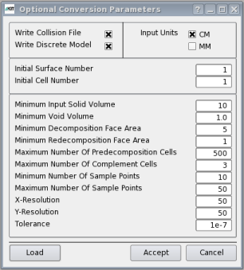
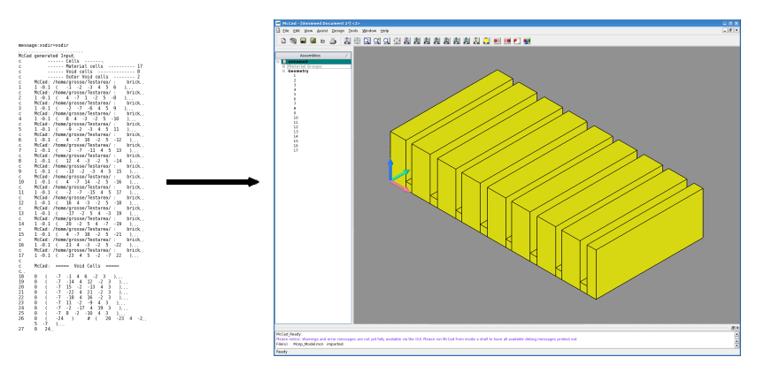

version 0.2.0
Table of content:
Introduction
This is the old McCad documentation - valid for releases with a smaller version number as 0.2.1For the documentation of the current version see here.
McCad is a CAD interface programme for Monte Carlo (MC) particle transport codes. It has been developed at Karlsruhe Intitute of Technology (KIT).
In the current version the programme generates MC geometry description for the MC codes MCNP5 and Tripoli4. MCNP geometry can partially be reconverted into CAD data. This feature needs to be developed further.
McCad uses only open source software and is conceived as open source project itself. Please take a look at the License agreement.
Supported CAD file formats are the CAD system independent formats STEP, IGES and BREP. The STEP file format is most suitable for the conversion process. It is supported by all major CAD systems. Due to the used CAD kernel and the capability of the MC codes to handle only algebraical surface types of order up to two (and circular tori) the choice for surfaces for a CAD model to be converted by McCad is restricted to the following types:
- Planes
- Cylinders
- Cones
- Spheres
- Circular Tori
McCad -s InputFile.stp from command line.
Requirements
- Operating System: Linux / Unix
- cmake ≥ 2.8.0 (for installation)
- OpenCascade 6.5.2 (or OpenCascade Community Edition)
- Qt ≥ 4.5
- doxygen (for documentation)
For large models it is advisable to have sufficient main memory (≥ 8GB)
Installation
For the install of McCad the software listed above (Requirements) section must be installed and configured properly. The following subsection is a guide for the installation and configuration of the OpenCascade community edition (OCE).OCE
Since 2011 a community edition (OCE) of OpenCascade Technology exists. The OCE package comes with a cmake script for installation and includes bug fixes which were reported by the community. The package is compatible with the official OCCT release.In this section the prerequisites as well as the installation and setup of OCE for the use with McCad is presented.
Prerequisites
- g++ 4.6
- TCL 8.5.8
- TK 8.5.8
- TclX 8.4.0
- FreeType 2.3.7
- Ftgl 2.1.2 (2.1.3 valid for OCE)
- X11 Xmu
Getting the sources
The OCE sources are under git version control. To fetch a copy of the latest development one needs to have installed git.From command line call:
> git clone git://github.com/tpaviot/oce.git .../TargetDirectory
Compiling the sources
To generate the Makefile:
> cd .../TargetDirectory
> mkdir build && cd build
> cmake ..
If any errors occur, make sure all prerequisites are met.Building and installation:
> make
> sudo make install
Standard installation prefix is /usr/local.
Setup
OCC and OCE use a different directory structures in the installation process.The standard installation prefix is /usr/local/ for both packages but OCC copies the header files to $prefix/inc while OCE copies the header files to $prefix/include/oce
For OCC the resource files are located under $prefix/src whereas OCE stores them under $prefix/share/oce-${versionnumber}/src.
This has influence on the setting of the environmental variables.
For OCC
export CASROOT=/usr/local/
export CSF_GraphicShr=$CASROOT/lib/libTKOpenGl.so
For OCE
export CASROOT=/usr/local/share/oce-0.9.0-dev
export CSF_GraphicShr=/usr/local/lib/libTKOpenGl.so
For both
export CSF_MDTVFontDirectory=$CASROOT/src/FontMFT
export CSF_LANGUAGE=us
export MMGT_CLEAR=1
export CSF_EXCEPTION_PROMPT=1
export CSF_SHMessage=$CASROOT/src/SHMessage
export CSF_MDTVTexturesDirectory=$CASROOT/src/Textures
export CSF_XSMessage=$CASROOT/src/XSMessage
export CSF_StandardDefaults=$CASROOT/src/StdResource
export CSF_PluginDefaults=$CASROOT/src/StdResource
export CSF_XCAFDefaults=$CASROOT/src/StdResource
export CSF_StandardLiteDefaults=$CASROOT/src/StdResource
export CSF_UnitsLexicon=$CASROOT/src/UnitsAPI/Lexi_Expr.dat
export CSF_UnitsDefinition=$CASROOT/src/UnitsAPI/Units.dat
export CSF_IGESDefaults=$CASROOT/src/XSTEPResource
export CSF_STEPDefaults=$CASROOT/src/XSTEPResource
export CSF_XmlOcafResource=$CASROOT/src/XmlOcafResource
export CSF_MIGRATION_TYPES=$CASROOT/src/StdResource/MigrationSheet.txt
McCad
Building McCad from sources
After decompressing the McCad archive enter the McCad directory
> cd mccad-$someversionnumber
Create a build directory, enter it and generate the Makefile
> mkdir build && cd build
> cmake ..
After this step Makefile has been generated. For comilation and installation run
> make
> sudo make install
Custom installation directory
Standard prefix is /usr/local/. If you want to install McCad in a different directory, call cmake with the parameter CMAKE_INSTALL_PREFIX
> cmake .. -DCMAKE_INSTALL_PREFIX=/your/path
Make sure that the bin directory is in the PATH and the lib directory is in the LD_LIBRARY_DIR variable.
Use of McCad
McCad integrates a graphical user interface (GUI) which allows the visualization of CAD geometry and the exchange of CAD data and MC geometry description (CAD<->MCNP, CAD->Tripoli). For the conversion of complex (large) models it should be considered to omit the GUI and perform the conversion step by step from command line. The reason herefore is, that the bigger a CAD model is the higher grows the probability for the occurence of solid parts that cannot be converted. The export functions implemented in the GUI are one-click exports. The algorithmic export from CAD to MC consists of three steps, from which two are critical. The first step is the sign constant decomposition of all input solids. The second step is the generation of potential void volumes. In both cases Boolean operations on CAD solids are performed. Unfortunately, the implementation of the Boolean operations in the used CAD kernel are not failsafe. Also, this is a beta release. There are still some undiscovered bugs in the McCad source code. (For more details on the underlying algorithm please take a look at: D. Grosse, H. Tsige Tamirat, "Current Status of the CAD Interface Programme for MC Particle Transport Codes McCad", Internat. Conf. on Advances in Mathematics, Computional Methods and Reactor Physics, Saratoga Springs, N.Y., May 3-7, 2009, Proc. on CD-ROM, LaGrange Park, III.)GUI

McCad GUI displaying MCNP geometry
The image shows the McCad GUI displaying the solid geometry of a MCNP input file. By default the void geometry will not be constructed. The frame on the left shows the material groups found in the MCNP input file in the upper area, and below the IDs of the reconstructed volumes. A mouse click on the material group selects all members of the group.
To modify the visualization the GUI offers different tools.
Visualization tools:
- Zoom (mouse wheel)
- Rotate (middle mouse button)
- Pan (ctrl + left mouse button)
- Type of visualization -> Shaded, Wireframe, Hidden Lines
- Coloring (context menu, right click)
- Transparency (context menu, right click)
- Definition of clipping planes (window)
- Hiding of selected shapes
- Displaying of selected shapes only
- Redisplaying of selected shapes
- different projections (display of two coordinates in the status bar)
The GUI imports STEP(.stp, .step), IGES(.igs, iges), BREP(.rle, brep) and MCNP(.mcn) files. Available surface types in MCNP are: P, PX, PY, PZ, SO, S, SX, SY, SZ, C/X, C/Y, C/Z, CX, CY, CZ, K/X, K/Y, K/Z, KX, KY, KZ, TX (circular), TY (circular), TZ (circular), X, Y, Z, P; as well as the following macro bodies: BOX, RPP, SPH, RCC, RHP. The Export function supports the three mentioned CAD formats (caution BREP allows only one solid to be exported per file) as well as MCNP(.mcn) and Tripoli(.d, .tri) geometry description. When exporting to a MC file format a dialog with (optional) conversion parameters appears. The parameters affect the computation of the void space for the MC file.

Optional MC Export Parameters
Optional Parameters :
- Write Collision File [0|1] : If this box is checked, a test for collisions between input solids is performed. The result is written to the file
.CollisionFile in the working directory. If it is unchecked, the programme trys to read.CollisionFile and extract the collision data. If you convert an identical geometry with a different parameter set, you can uncheck this box. It will reduce the conversion time. - Write Discrete Model [0|1] : All faces of all solids will be covered with sample points. These sample points are used for collision detection among the input solids, and between the input solids and the generated void space on CAD level. If this box is checked a
_*.voxel file will be written for every input solid. The *_.voxel files contain the the location information of the sample points. If you rerun the same geometry with e.g. a different setting for the minimum cut face area, uncheck this box. It will reduce the conversion time. - Input Units [MM|CM]: MC codes use
cmas basis length unit. If the CAD model is not prepared incmunits (default in CAD systems is usuallymm) selectmmas input units. Otherwise the output will be wrongly scaled. - Initial Surface Number [integer] : If a CAD part for an already existing MC model will be converted, a range of surface IDs is already ocupied. This parameter sets the initial surface number for the converted CAD model.
- Initial Cell Number [integer] : same as Initial Surface Number but for solid volumes
- Minimum Input Solid Volume [real]: omits input solid volumes (input units) smaller than this value
- Minimum Void Volume [real]: Determines the minimum volume (input units) of a cutted part of the bounding box (see next parameter). The smaller this value, the more void volumes will be generated
- Minimum Decomposition Face Area [real] : The void space is generated from a bounding box which surrounds the whole CAD model. The bounding box is decomposed by all sign changing planar faces of the decomposed CAD model. This value determines the minimum area (input units) a face may have to become a cut face. This parameter is used to regulate the number of void volumes that are generated by the code. The smaller this value, the more void volumes.
- Minimum Redecomposition Face Area [real]: If a void volume collides with too many solids, perform a second decomposition cycle on the void volume. Use this value as minimum area (input units) for cut faces. This value must be smaller than Minimum Decomposition Face Area. This prevents an excessive use of the complement operator.
- Maximum Number Of Predecomposed Cells: If the number of cuts of the bounding box reaches this value, the cutting will stop. This prevents the production of too many void volumes.
- Maximum Number Of Complement Cells: Determines how many complement operators should be used at a max for one void volume. This value shouldn't exceed
10 - Minimum / Maximum Number Of Sample Points: Determine the lower and upper limit for sample point generation. If too many sample points will be generated the code will become noticeable slower and the chance that the computer runs out of memory for larger models increases. If too little sample points are generated the collision test will not be reliable and the resulting MC file might become useless. The limits determine the number of sample points per edge. The desired resolution can be defined with the next parameters.
- X-/Y-Resolution: Determines the desired mesh size for the sample point generation. (input units)
- Tolerance: Determines the tolerance for all geometrical operations (measurements) in the problem.
These are optional parameters. For most models the predifined parameters should generate acceptable results.
Design Tools:
The design tools allow to create new macrobodies (Box, Cylinder, Sphere, Cone) and to move them in space (rotate, translate, copy to). Boolean operations are not yet implemented.
Command Line
On the command line the conversion from CAD to MC is split into two steps. The first step is the sign constant decomposition of all CAD solids. The second is the completion of the model with void geometry and the printing into the MC input file. The following options are available:- -d, --decomposition : perform a sign constant decomposition on a single CAD file. The decomposed geometry will be saved in a STEP file with the same name as the input file's name but with the prefix 'converted'. e.g McCad -d InputFile.stp -> convertedInputFile.stp
- -m, --mcnp : complete model by void and export the geometry description to an MCNP input file. This option requires a parameter file. The content of the parameter file is explained below.
- -t, --tripoli : complete model by void and export the geometry description to an Tripoli input file. This option requires a parameter file. The content of the parameter file is explained below.
- -e, --explode : explodes all solids from an input file into single STEP files named 'ExOut_FILENAME_::Nb.stp'.
- -f, --fuse : fuses all STEP files in a folder into a single STEP file. Requires a directory as input parameter.
- -s, --surface-check : Requires a STEP file as input. Prints a list of all surface types in the file. Optionally insert a file name which the information will be written into.
# # McCadInputFile.txt - EXAMPLE # # '#' introduces a comment line # The format of this file is "keyword" "Value" where value can be a # string, a real, or integer value. Order is irrelevant. # Each line that isn't a comment or begins with a key word will be # treated as input directory containing converted*.stp files. # # Do not put comments in keyword lines!!! # Units MM ... CAD units MM or CM InitSurfNb 500 ... Initial Surface Number of output InitCellNb 100 ... Initial Volume Number of output WriteCollisionFile 1 ... Write .CollisionFile of input solids (1st run only) WriteDiscreteModel 1 ... Write *.voxel files for input solids MinimumInputSolidVolume 1.00 ... all volumes smaller than this will be neglected MinimumVoidVolume 1.25e2 ... make sure void volumes don't become to small MinimumSizeOfDecompositionFaceArea 50 ... first cut surface area MaximumNumberOfComplementedCells 10 ... how many complement operators may be used per void volume MaximumNumberOfPreDecompositionCells 500 ... sets upper bounds for number of void volumes after first cut MinimumSizeOfRedecompositionFaceArea 5 ... recut if maximum number of complement cells is exceeded MinimumNumberOfSamplePoints 10 ... lower bound for discretization along a face's edge MaximumNumberOfSamplePoints 50 ... upper bound for discretization along a face's edge XResolution 50 ... desired resolution of discretization in x direction YResolution 50 ... desired resolution of discretization in y direction Tolerance 1e-7 ... tolerance for all methods # BoundingBox /home/user/Testarea/Bounding_Box/BB.stp ... location and name of bounding box # MDFile /home/user/Testarea/MaterialList/MDList.txt ... Material and Density information - MCNP only # # directories that contain the converted*.stp files /home/user/Testarea/Model_Part1/ /home/user/Testarea/Model_Part2/ /home/user/Testarea/Model_Part3/
For MCNP only, one can define a MDFile which contains material and density information for CAD solids. Unfortunately the material information is not transported with the STEP file. Therefore the need for a material information list arises. A MDFile is a plain ascii string text file containing three coloumns. In the first coloumn stands the name of a CAD file, e.g. convertedTestSolids.stp, without the file extension and without the conversion-prefix converted, i.e. TestSolids. The second coloumn holds the material number the solids should be given and the last coloumn contains the corresponding density. If for example the file TestSolids.stp contains three solid volumes which are supposed to consist of stainless steel, and another file testSolids2.stp containing six solids made of concrete, the corresponding MDfile could look like this:
# Name MaterialNumber Density
TestSolids 1 -8.3
TestSolids2 2 -2.4
When using the MDFile parameter each step file can contain only solids with identical material composition and density. If you want to add universe labels to the cells in the output file (MCNP only) you can export the variable MCCAD_MAKEUNIVERSE=num, where num is the number of the universe. Importances for neutrons and photons will be set to 1 for all volumes except the outer voids for which the importances are set to 0.
Output
Output from the sign constant decomposition.failedVolumeControl : The accumulated volume of all decomposition parts of a decomposed model will be compared to the volume of the original model. If a quotient differs more 1e-5 from 1 the name of the corresponding file and the volume information will be printed into this file.
.Collision : Detected collisions among the input solids. Every volume is listed by the number of occurence. If a collision is detected the second number in a line will differ from 0. This value reflects the number of collisions. The next values will be the IDs of the input volumes the current solid collides with.*.voxel : Contain the voxel points of the input solids..cadVolumes : Contains a list with two coloumns. First coloumn: the number of a solid volume in the MC output file. Second coloumn: The corresponding volume calculated by the CAD kernel.Mcnp_Model.mcn: Standard name of the converted MCNP model after conversion from command line.Tripoli_Model.d: Standard name of the converted Tripoli model after conversion from command line.
Example
In $MCCADROOT/example is a simple CAD example file (brick.stp), a parameter file (McCadInputFile.txt) and a MDFile (MaterialList.txt) located. In the following we'll see how to translate the CAD file into MCNP geometry description including material information (only available for MCNP). Change directory to $MCCADROOT/example and start the McCad GUI by entering McCad. You can tell the GUI that the current directory is the working directory by passing the argument '.' , i.e. "McCad ."We import the CAD file brick.stp . Open the import dialog by clicking File and then Import or use the shortcut ctrl+i . Select the file brick.stp and click the Import button. The GUI should show this picture.

Visualization of a simple example geometry
The following paragraph is only relevant for conversion to MCNP! This paragraph describes how to assign material information to a shape. First add a material group by right clicking on the white space in the assembly viewer on the left side and select Add new material group. In the appearing dialog enter the name for the material group you prefere, the density and the material description as it will appear in the MCNP input file in the data section. Confirm the material group. It will now appear with its name in the assembly viewer under Material Groups. Select the solid object by clicking once on it in the visualization window or on its corresponding name in the assembly viewer. For selecting multiple objects, keep the ctrl button pushed down. Right click on the assembly viewer and choose Add solids to material group. Select the material group name from the appearing dialog and confirm your choice. The object is now in the chosen material group. Clicking once on the material group name in the assembly view selects and highlights all members of this group.
To save a loaded geometry in an xml file (material information will be saved, too) choose File -> Save As. To export the geometry open the export dialog by choosing File -> Export or by its shortcut ctrl+e. Enter a name, choose a file type and click export.
If you've followed the material assignment steps above you can reimport the MCNP geometry into CAD. Remember that only material volumes will be restored from MC files.

Visualization of the reconversion MCNP -> CAD
Conversion in command line
$> McCad -h
=============================================
McCad
=============================================
McCad is a CAD interface for Monte Carlo Transport Codes.
Usage: McCad [Options] [File | Path]
Options: -d, --decompose : Decomposes the CAD input file, requires a STEP-FILE If no output file is defined, the output will be saved as converted'FILE'. -e, --explode: Calls the Exploder, requires a STEP-FILE Explodes all solids in a STEP file to distinct files. Does not accept an Output File. -f, --fuse : Calls the Fusioner, requires a DIRECTORY Fuses all STEP-FILES in the passed Directory into one single file. -m, --mcnp: Calls the VoidGenerator to generate void volumes, and prints the mcnp geometry into a file; requires an McCad_InputFile. See manual for more details on the InputFile. -s, --surface-check: Prints a list of all surface types of a given model into the output file. -t, --tripoli: Calls the VoidGenerator to generate void volumes, and prints the tripoli geometry into a file; requires an McCad_InputFile. See manual for more details on the InputFile.
perform a surface check $> McCad -s brick.stp ... FILE: brick.stp
number of solids : 1
Surface Information for Solid 1 ======================================== Number Of Surfaces In Model : 38 ---------------------------------------- Planes : 38 Cylinder : 0 Cones : 0 Spheres : 0 Toroidal Surfaces : 0 ========================================
sign constant decomposition $> McCad -d brick.stp ... compute void space and output to MCNP geometry description $> McCad -m McCadInputFile.txt ... output file is Mcnp_Model.mcnYou can find an example for McCadInputFile.txt and the MaterialList.txt in the $MCCADROOT/example.
Development
Implement support for the MC code XYZ:inherit a class McCadExDllXYZ_XYZ from McCadEXPlug_MCBase. For an example take a look at McCadExDllMcnp_Mcnp add the McCadCSGGeom_XYZ to the enumeration in McCadCSGGeom_MCType.hxx edit the corresponding print functions in the surface classes in McCadCSGGeom_..., e.g.: McCadCSGGeom_Plane::Print(...) implement a parameter switch into main.cpp to load the export function of the newly created class
Extract the export function:
You might want to start at McCadEXPlug_MCBase.cxx which is the base class for all exports to MC data. It is inherited by McCadExDllMcnp_Mcnp and McCadExDllTripoli_Tripoli. The conversion is the same for all MC codes except for the final printing. The base class calls the convert tools McCadConvertTools_Decomposer which performs a sign constant decomposition of the input solids and McCadConvertTools_VoidGenerator which calculates the void space for the output file.